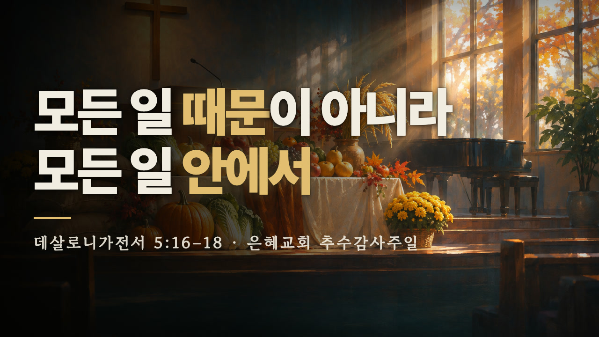

범사에 감사하라
롱폼 썸네일


설교 롱폼 (30분 42초)
미리보기라 10분씩 나눠 올렸어요. 한 부분이 끝나면 다음 부분이 자동으로 재생돼요. 버튼으로 받는 파일은 1080p 원본이에요. 설교 음성에 그림과 자막을 입힌 영상이고, 봉독 전 "다시 시작" 안내와 마지막 찬양 '감사'는 뺐어요. 유튜브에는 이미 공개로 올라가 있어요.
목사님께 확인 부탁드려요
- 12분 50초쯤 "강사이신 임은주 사모님" — 녹음이 "임금주"처럼도 들려요. 강사 사모님 성함이 맞는지 알려 주세요.
- 24분쯤 "지금 우리 왕 권사님이… 88세거든요" — 호칭이 잘 안 들려서 "왕 권사님"으로 넣었어요. 90세 "권사님"도 맞는지 봐 주세요.
- 22분쯤 후배 목사님 "폐암 4기" 이야기를 공개 영상에 그대로 둬도 괜찮을까요?
- 1분 40초쯤 "20일 동안 함께, 평균 10명 이상" — 기도회 15일째 시점이라 숫자가 맞는지 확인 부탁드려요.
쇼츠 4편 (완성본)
제목, 자막, 배경음악까지 넣은 완성본이에요. 수·목·금·토 저녁 8시에 한 편씩 올라가요.
현장 스케치
보내 주신 애찬 사진·영상으로 만들었어요. 현장 소리 대신 설교 음성과 피아노 배경음악을 넣었고, 유튜브에 공개로 올라가 있어요.